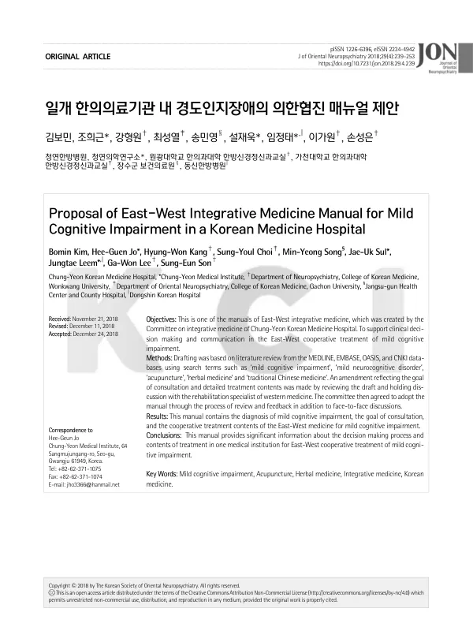

Proposal of East-West Integrative Medicine Manual for Mild Cognitive Impairment in a Korean Medicine Hospital
Kim B, Jo HG, Kang HW, Choi SY, Song MY, Sul JU, Leem J, Lee GW, Son SE
Journal of Oriental Neuropsychiatry 29(4):239-253

첫 장 · 오픈액세스First page · open access
논문 소개Summary
경도인지장애의 동서협진을 위한 매뉴얼입니다. 수술 후 재활을 다룬 앞선 연작과 달리 만성 질환을 대상으로 하며, 초안을 잡는 방식도 달라졌습니다. 메드라인과 엠베이스, 오아시스, 중국학술정보원에서 경도인지장애와 경도신경인지장애, 침, 한약, 중의학 등을 검색어로 문헌을 검토해 초안을 만들고, 양방 재활의학 전문의와 논의해 협진의 목표와 구체적인 치료 내용을 반영해 고쳤으며 위원회가 검토와 대면 논의로 채택했습니다. 매뉴얼에는 경도인지장애의 진단과 협진의 목표, 동서 협력 치료의 내용이 담겼습니다. 한 의료기관의 결정 과정과 치료 내용을 공개했다는 데 뜻이 있습니다.
A manual for East-West collaborative treatment of mild cognitive impairment. Unlike the preceding series on post-surgical rehabilitation it addresses a chronic condition, and the drafting method changed accordingly. The draft was built on a literature review across MEDLINE, EMBASE, OASIS and CNKI using search terms such as mild cognitive impairment, mild neurocognitive disorder, acupuncture, herbal medicine and traditional Chinese medicine; it was then revised through discussion with a Western medicine rehabilitation specialist to reflect the goal of consultation and the detailed content of treatment, and adopted by the committee after review and face-to-face discussion. The manual contains the diagnosis of mild cognitive impairment, the goal of consultation, and the content of East-West collaborative treatment. Its significance lies in making one institution's decision process and treatment content public.
인용Cite
Kim B, Jo HG, Kang HW, Choi SY, Song MY, Sul JU, Leem J, Lee GW, Son SE. Proposal of East-West Integrative Medicine Manual for Mild Cognitive Impairment in a Korean Medicine Hospital. Journal of Oriental Neuropsychiatry. 2018;29(4):239-253. doi:10.7231/jon.2018.29.4.239